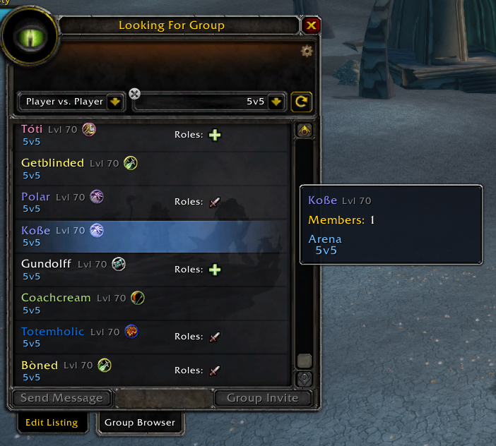

Windows automatic bundle
Addon, installer, background updater, manual update shortcut, documentation, and uninstaller.
- Automatic rating refreshes
- Exact highs for recently encountered names
- One-click uninstall included
TBC Anniversary · Nightslayer + Dreamscythe US
See a player's color-coded current and exact record 2v2, 3v3, and 5v5 arena ratings in Group Finder, on world hover, in battlegrounds, or when they whisper you.
Version 1.2.6 · Free · Windows 10/11 · Two realms · Automatic updates
Ratings where you need them
The addon adds ratings to the Group Finder tooltip and normal player tooltip. Whispers get one private local rating summary in chat—nothing is sent to the other player.

Current ratings use neutral bands from Rated through Elite. They are quick visual context—not a claim that someone earned an official title.
A central read-only snapshot refreshes hourly, so most names have useful ratings before your computer makes any profile lookup.
Your own characters are discovered automatically, and names you encounter are queued for a focused local IronForge profile lookup. Until it finishes, the tooltip says “Observed*,” never a lifetime peak.
Group Finder, player hovers, battleground opponents, and incoming or outgoing whispers all work without mixing same-named characters across realms.
One-time setup
Exit TBC Anniversary completely so Windows can place the addon safely.
Right-click the downloaded file, choose “Extract All,” then open the extracted folder.
The installer normally finds _anniversary_ itself. Start WoW and hover a Group Finder or world-player name.
Downloads
The automatic Windows bundle is the intended experience. The addon-only download is provided for people who prefer to manage files themselves.
Addon, installer, background updater, manual update shortcut, documentation, and uninstaller.
Just the NightslayerRating addon folder and the rating snapshot packaged with this release.
Transparent by design
This is an unsigned community package, so Windows may show a security warning. You can inspect every script before running it and remove everything with Uninstall.cmd.
%LOCALAPPDATA%\NightslayerRating.Windows bundle SHA-256e9256b6a3fe8e0a0f06ae14defd7388e6acc3847ffa442bfcb5350977c570eb0